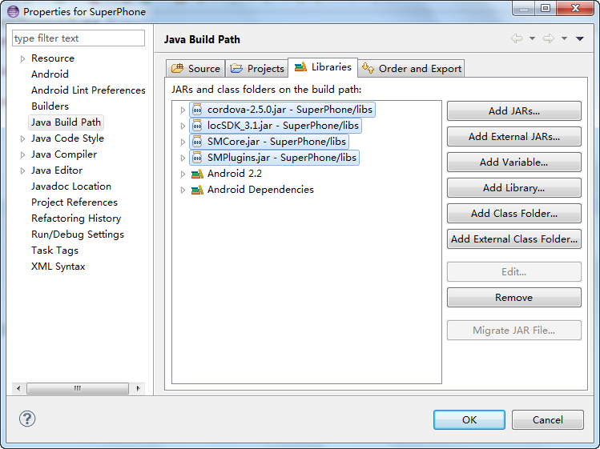
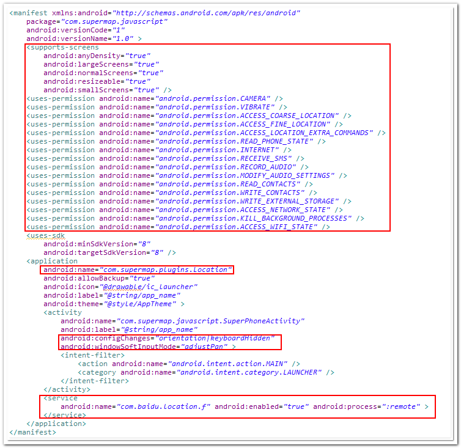

离线缓存与APP专题
一、SuperMap iClient for JavaScript 移动应用简介

SuperMap iClient 8C(2017) for JavaScript 是一款在服务式 GIS 架构体系中，面向 HTML5 的应用开发，支持多终端，跨浏览器的客户端开发平台。 通过 SuperMap iClient 8C(2017) for JavaScript，无需任何插件，便可以在浏览器上实现美观的地图展现，内容丰富的地图应用。
近些年来随着智能终端的迅速发展，LBS 应用的大众化普及，手机地图已经在日常生活中扮演着不可或缺的作用。 相比传统的 PC 端地图应用，手机地图的应用具有便于携带、 便于操作、不受空间约束等优势，移动终端这些全新的用户体验是也是传统 PC 所无法媲美。正是在这种背景下， SuperMap iClient 8C(2017) for JavaScript 提供了对手机平台的扩展支持。
SuperMap iClient 8C(2017) for JavaScript 提供的 APP 应用插件， 在技术上采用 PhoneGap 开源开发框架，针对 PhoneGap 进行了代码兼容和优化， 并实现了地图离线缓存的插件化支持。通过 SuperMap iClient 8C(2017) for JavaScript 开发平台， 你可以通过 HTML，CSS 和 JavaScript 技术构建出基于浏览器的地图应用；通过 PhoneGap 开发框架，你可以将已有的地图应用直接打包生成支持 Android 的应用程序， 并且可以调用系统级别的功能来丰富应用；通过 SuperMap iClient 8C(2017) for JavaScript 提供的 APP 应用插件，地图应用具备离线缓存的功能，满足用户在离线状态下的地图应用。 这样， Web 开发人员利用已有的技术储备，不需要太多的额外学习成本就可以快速的开发出自己的地图 APP 应用。 该开发模式具有如下一些特点：
- APP应用摆脱浏览器的束缚，提供定制化的地图应用，具有较好的用户体验
- 利用已有的Web技术，不需要考虑繁杂的底层技术
- 支持多种手机平台
- 支持通过 js 调用系统级接口，比如摄像头，GPS 等
- 支持地图离线缓存
二、SuperMap JavaScript for Android APP 入门简介
该文档介绍了基于SuperMap iClient 8C(2017) for JavaScript 开发平台生成的的地图应用，如何生成 Android 的应用程序的完整教程， 该地图应用具备地图浏览，缩放，离线缓存等基本功能，用户可以在此基础上增加自己的业务需求， 丰富地图应用。该示例在开发包范例中可以获取。
- 安装 SDK，安装开发环境
- 下载并解压 SuperMap iClient 8C(2017) for JavaScript
- 下载并安装 Eclipse Classic
- 下载并安装 Android SDK
- 下载并安装 ADT Plugin
- Android工程创建
- 打开Eclipse，新建Android工程，如下图（Application Name: SuperPhone、Package Name: com.supermap.javascript、Create
Activity: SuperPhoneActivity），点击Finish完成（备注：因为Eclipse版本不同，新建工程的布局可能会略有不同）

- Android 工程下新建文件夹: /assets/www 及 /libs
- 将 SuperMap iClient 8C(2017) for JavaScript 开发包中的 resource/PhoneGap/clouddemo文件夹中的内容拷贝至 Android 工程下的 /assets/www 位置
- 将 SuperMap iClient 8C(2017) for JavaScript 开发包中 resource/PhoneGap/libs 文件夹中的armeabi文件夹以及 cordova-2.5.0.jar、locSDK_3.1.jar、SMCore.jar 和 SMPlugins.jar 拷贝至 Android 工程下的 /libs 位置
- 添加 jar 包（cordova-2.5.0.jar、locSDK_3.1.jar、SMCore 和 SMPlugins）到 Android 工程中
 - 将 SuperMap iClient 8C(2017) for JavaScript 开发包中 resource/PhoneGap/res 文件夹中的 xml 文件夹拷贝至 Android 工程下的 /res 位置
- 将 SuperMap iClient 8C(2017) for JavaScript 开发包中的 resource/PhoneGap/res 文件夹中的 splash.png 拷贝至 Android 工程下的 /res/drawable-hdpi 位置
- 修改 AndroidManifest.xml在Activity中加入 android:windowSoftInputMode="adjustPan" android:configChanges="orientation|keyboardHidden"属性
- 修改 AndroidManifest.xml在application中加入 android:name="com.supermap.plugins.Location"
- 在application节点下增加代码
<service android:name="com.baidu.location.f" android:enabled="true" android:process=":remote" ></service> - 修改 AndroidManifest.xml 权限，添加如下内容，修改代码访问权限
<supports-screensandroid:largeScreens="true"
android:normalScreens="true"
android:smallScreens="true"
android:resizeable="true"
android:anyDensity="true"
/><uses-permission android:name="android.permission.CAMERA" />
<uses-permission android:name="android.permission.VIBRATE" />
<uses-permission android:name="android.permission.ACCESS_COARSE_LOCATION" />
<uses-permission android:name="android.permission.ACCESS_FINE_LOCATION" />
<uses-permission android:name="android.permission.ACCESS_LOCATION_EXTRA_COMMANDS" />
<uses-permission android:name="android.permission.READ_PHONE_STATE" />
<uses-permission android:name="android.permission.INTERNET" />
<uses-permission android:name="android.permission.RECEIVE_SMS" />
<uses-permission android:name="android.permission.RECORD_AUDIO" />
<uses-permission android:name="android.permission.MODIFY_AUDIO_SETTINGS" />
<uses-permission android:name="android.permission.READ_CONTACTS" />
<uses-permission android:name="android.permission.WRITE_CONTACTS" />
<uses-permission android:name="android.permission.WRITE_EXTERNAL_STORAGE" />
<uses-permission android:name="android.permission.ACCESS_NETWORK_STATE" />
<uses-permission android:name="android.permission.KILL_BACKGROUND_PROCESSES"/>
<uses-permission android:name="android.permission.ACCESS_WIFI_STATE" />
AndroidManifest.xml 文件内容最后效果如下图，注意红色框选区域的内容为我们所添加

- 打开Eclipse，新建Android工程，如下图（Application Name: SuperPhone、Package Name: com.supermap.javascript、Create
Activity: SuperPhoneActivity），点击Finish完成（备注：因为Eclipse版本不同，新建工程的布局可能会略有不同）
- 代码说明
- 拷贝如下代码替换 SuperPhoneActivity.java 代码，可参考代码注释
package com.supermap.javascript; import org.apache.cordova.DroidGap; import org.json.JSONException; import android.app.ActivityManager; import android.os.Bundle; import com.supermap.RequestControl; // 继承自PhoneGap的DroidGap类，实现WebView和WebKit的相互通信 public class SuperPhoneActivity extends DroidGap { /** Called when the activity is first created. */ @Override public void onCreate(Bundle savedInstanceState) { super.onCreate(savedInstanceState); super.setIntegerProperty("splashscreen", R.drawable.splash); // 加载clouddemo文件夹下的index页面 super.loadUrl("file:///android_asset/www/index.html", 5000); try { RequestControl.init(this); } catch (JSONException e) { e.printStackTrace(); } } // PhoneGap缺陷，需要再次强制退出，释放内存 public void onDestroy() { finish(); super.onDestroy(); ActivityManager activityManger = (ActivityManager) this .getSystemService(ACTIVITY_SERVICE); try { activityManger.restartPackage("com.supermap.javascript"); activityManger.restartPackage("com.supermap"); activityManger.restartPackage("com.supermap.plugins"); } catch (Exception e) { System.out.println(e.getMessage()); } System.exit(0); } } - index.html 代码说明，可参考代码注释
// 等待加载PhoneGap，增加监听事件onDeviceReady document.addEventListener("deviceready", onDeviceReady, false); // PhoneGap加载完毕后会调用此事件，用户在此进行初始化设置 function onDeviceReady() { init(); } function init() { SuperMap.Util.setApp(true); map = new SuperMap.Map("map", { controls: [ new SuperMap.Control.ScaleLine(), new SuperMap.Control.PanZoomBar(), new SuperMap.Control.Navigation({ dragPanOptions: { enableKinetic: true } })], units: "m" }); layer = new SuperMap.Layer.CloudLayer(); markerLayer = new SuperMap.Layer.Markers("Markers"); map.addLayers([layer,markerLayer]); map.setCenter(new SuperMap.LonLat(12957031.21685,4861858.2410885), 10); }
- 拷贝如下代码替换 SuperPhoneActivity.java 代码，可参考代码注释
- 右键单击项目节点选择 Run As，然后点击 Android Application，bin 目录下生成 APK 文件并在指定模拟器上运行
三、离线缓存简介
SuperMap iClient 8C(2017) for JavaScript 支持 APP 应用离线缓存功能，提供离线图片缓存和离线MBTile缓存两种方式，默认状态下为离线图片缓存方式。
离线图片缓存主要由两部分组成，config 文件用来记录地图服务的配置属性，缓存数据则保存在移动设备中SDCard\SuperMap下以地图名命名的文件夹中。
如上图，逻辑部分仍然由 JavaScript 层面处理，Java 层面只负责下载图片的功能部分。当需要创建新的瓦块图片时，JS 已异步的方式向 Java 通信， Java 将网络 Url 的图片以多线程的方式保存到本地，然后再以异步方式返回本地的 Image 路径，然后如下的逻辑不变，仍然由 JavaScript 来实现。 整个离线缓存采用边浏览边下载的策略，通过异步的方式在Java层下载缓存数据，不会影响用户体验。
离线MBTile缓存也由两部分组成，index文件用来记录地图服务的配置属性，MBTile缓存数据则直接放在移动设备中SDCard\SuperMap下即可。其中MBTile文件可通过iserver的预缓存功能获取，index文件下的服务配置如下图所示：
/* * 服务的名称"world"必须和MBTile文件的名称相同; * 实例化服务的时候必须增加"storageType"属性，并将该属性的值设为"db"（若将该值设为"File"则表示使用离线图片缓存方式）。 */ layer = new SuperMap.Layer.TiledDynamicRESTLayer("world", url, {transparent:true,cacheEnabled:true}, {maxResolution:"auto","storageType":"db"});
四、示例效果图的展示
通过上面的示例，我们就可以快捷的基于已有的 Web 技术，快速生成带有离线缓存功能的地图应用， 在这基础上，你可以通过 SuperMap iClient 8C(2017) for JavaScript 提供的脚本，实现查询，绘制等地图展现， 通过 SuperMap iServer 的 REST 服务进行地图网络分析，叠加分析等地图分析，也可以通过调用系统接口来实现 GPS 定位，天气查询等地图服务， 这样，你就可以定制化的实现你期望的丰富的移动地图应用。